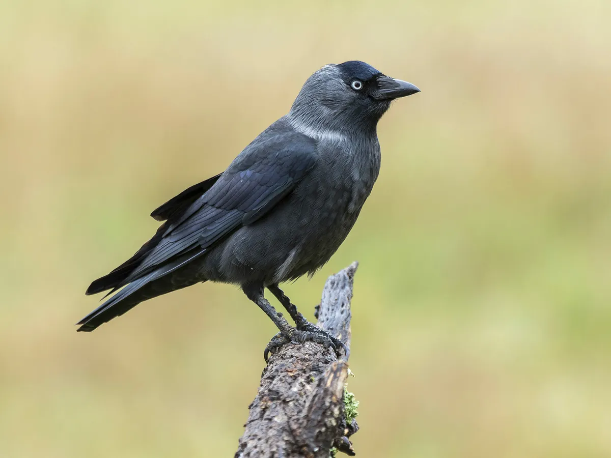

JACKDAW
A jackdaw call is most noticeable when the birds are in flocks since the group will call out to one another.

Audio migth not play if broswer is not updated
A jackdaw call is most noticeable when the birds are in flocks since the group will call out to one another.
Audio migth not play if broswer is not updated